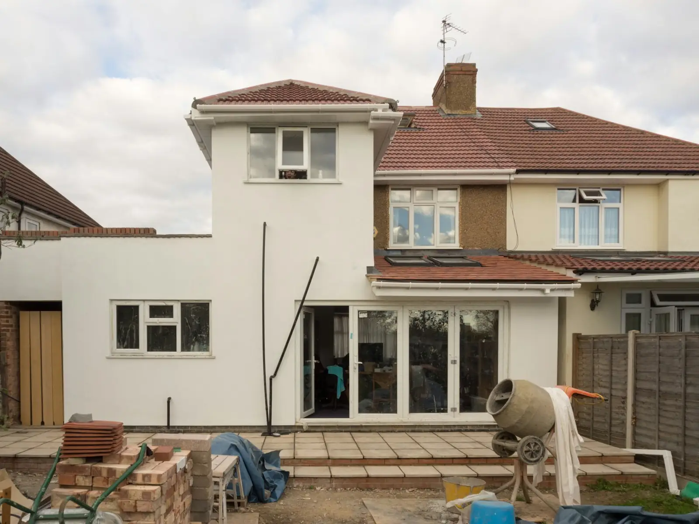

Salles de bain
Céramique de plancher, murs et douches.

Pose de céramique et finition intérieure à Notre-Dame-du-Portage et dans les environs. Parlez-nous de votre projet.
Contenu d'exemple : la liste sera ajustée à vos services réels.
Céramique de plancher, murs et douches.
Pose de dosserets et de revêtements muraux.
Pose de carreaux de céramique et de porcelaine.
Travaux de finition, selon vos services.
Préparation du support avant la pose.
Vos projets en photos.
Céramique et revêtements · Notre-Dame-du-Portage
Basée à Notre-Dame-du-Portage, au service de la région.
Un appel au 418 894-5798 et vous joignez l'entreprise, sans intermédiaire.
Le formulaire en ligne vous permet de faire une demande de soumission en une minute, même le soir.
Par téléphone ou avec le formulaire : décrivez votre besoin en quelques lignes.
On discute de votre situation et on vous propose la suite, soumission à l'appui.
On planifie avec vous et on s'occupe du reste.
Secteurs à confirmer avec vous.
Appelez-nous ou remplissez le formulaire : on vous revient rapidement.
Téléphone418 894-5798Cet aperçu a été préparé gratuitement pour SD Surfaces. Version finale avec vos vrais textes, vos photos et vos services : 995 $ prix fixe, en ligne en environ 7 jours.